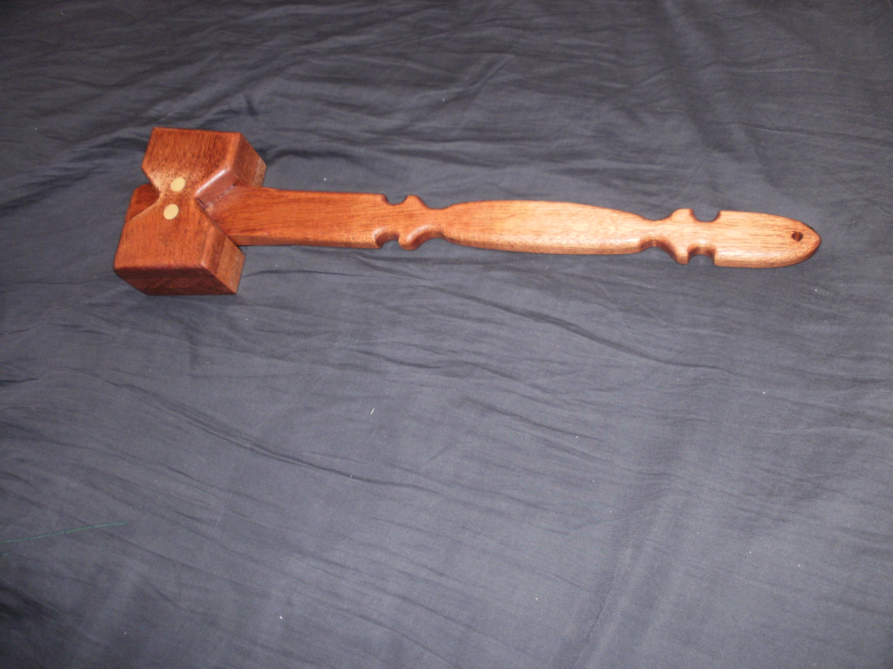
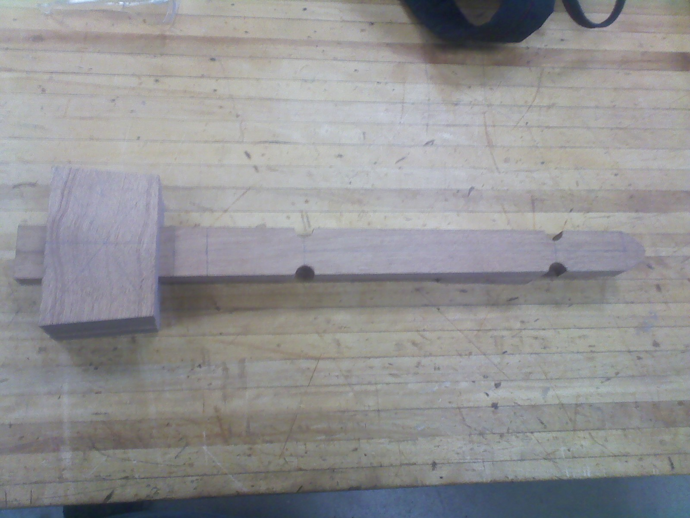
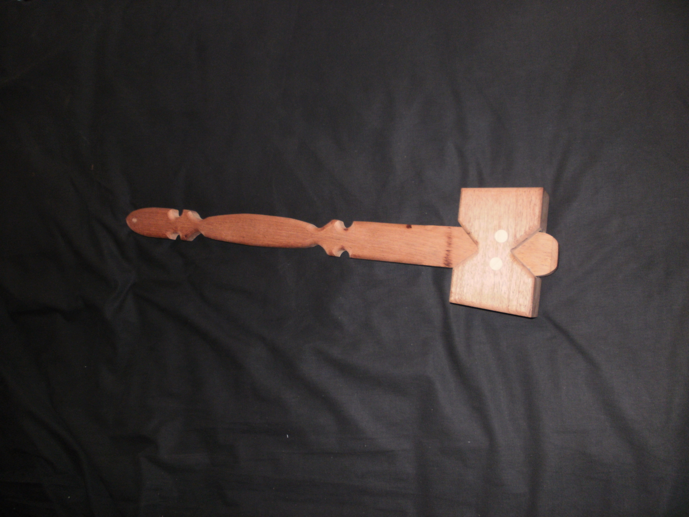

Wood Working
Wooden Mallet project instructions.
Mallet
Once you have a board that has been squared you will need to use a jig on a table saw to put a taper on the board this means that one end of the surface will be smaller than the other end. You can then shape the bottom portion of the handle to the shape you want. The other board that has been squared will need to have three pieces cut from it with tapers then tape two pieces together and drill two holes on both sides going through one piece and slightly into the next piece then taping the one with holes to the third piece and drilling through the holes and partly into the third piece. Using the handle piece, it will be placed in the center of piece with holes in it and have the sides marked then they will be cut and sanded to the lines. Using pegs the three pieces will be glued together to create the head of the mallet.

The handle will slide through the top of the mallet and will be wedged to fit then using a drill bit drill a large hole slightly into both sides of the head where the handle fits and then using a smaller drill bit drill the rest of the way through the head and handle and fit a peg just slightly shorter than the small hole. You can then cut plugs to fill the big hole and glue the peg, handle, and plugs in place.

Sand the whole thing to finish it and then apply finish.